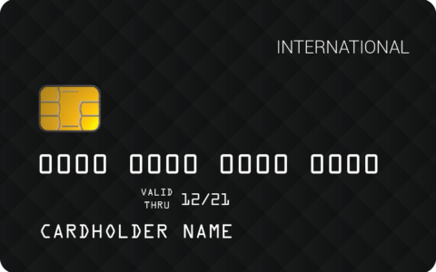

<!--
  Generated template for the VirtualcardPage page.

  See http://ionicframework.com/docs/components/#navigation for more info on
  Ionic pages and navigation.

<ion-header>

    <ion-navbar>
        <ion-title id="Card">Virtual Card</ion-title>
    </ion-navbar>

</ion-header>-->

<ion-content padding class="background">

    <div class="title">
        Virtual Card
    </div>

    <button class='hambutton' ion-button menuToggle>
    </button>

    <div class="hamburger">
        <div class="line1"></div>
        <div class="line2"></div>
        <div class="line3"></div>
    </div>

    <h3>Cash</h3>
    


    <div class="switch">
        <input id="cmn-toggle-1" class="cmn-toggle cmn-toggle-round" type="checkbox">
        <label for="cmn-toggle-1"></label>
    </div>

    <div class='button1'>
        <button class='addcash' ion-button color="dark">Add Cash</button>
    </div>

    <div class='button2'>
        <button class='cashout' ion-button color="dark">Cash Out</button>
    </div>

</ion-content>